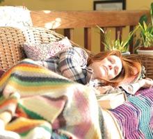
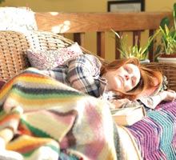

Alice acaba de cumplir 50 años y lo tiene todo: es profesora de Lingüística en la Universidad de Columbia, en Nueva York; su marido y sus tres hijos la adoran. No para ni un momento entre el trabajo y la familia, pero es lo que la hace feliz.
Vuela a Los Ángeles para dar una conferencia en UCLA, y allí sufre un pequeño percance. En plena conferencia, olvida una palabra clave y tarda unos momentos en enc/**/ontrar otra para poder seguir hablando, algo muy extraño en una persona tan acostumbrada a hablar en público.
Antes de regresar, aprovecha para ver a su hija Lydia, que ha decidido ser actriz contra la voluntad de su madre. De vuelta a Nueva York sale a correr para relajarse y es presa de un segundo incidente: de golpe, en el campus universitario que conoce tan bien, pierde el sentido de la orientación. No sabe dónde está ni lo que hace allí.
Alice pide una cita con un neurólogo que la somete a una serie de pruebas. Está convencida de que tiene un tumor cerebral, pero el médico piensa que se trata de algo aún más inquietante: la enfermedad de Alzheimer de inicio precoz. Alice no aguanta más y se lo cuenta a John, su marido.
Alice se lo comunica a sus hijos, que se quedan asombrados y tienen dificultades en procesar la información. Durante las semanas siguientes, Alice se enfrenta a las consecuencias que tiene la enfermedad en su matrimonio, su familia y su carrera.
Haciéndose pasar por hija de padres que padecen Alzheimer, visita una residencia para mayores especializada en la enfermedad. Se da cuenta de que no puede aceptar su destino y toma una decisión drástica que afectará a su vida cuando se vea más incapacitada.
El verano en la casa de la playa le aporta nuevas fuerzas y lucha contra todo pronóstico para mantener su vida, sus relaciones y el sentido de sí misma.

Ambos hicieron historia en el Festival de Sundance 2006 cuando su película QUINCEAÑERA ganó el Premio del Público y el Premio del Jurado. Además de otros muchos, también ganó el Premio Humanitas al Mejor Guion y el Premio Espíritu Independiente John Cassavetes en 2007.
En 2008 se ocuparon de la producción ejecutiva de la película biográfica PEDRO, acerca de Pedro Zamora, conocido por su activismo respecto al sida, para MTV. La película fue invitada a los festivales de Toronto y de Berlín, y fue presentada en televisión por el presidente Bill Clinton.

La película GRIEF (1994), dirigida por Richard Glatzer, ganadora del Premio a la Mejor Película en los festivales de Gais y Lesbianas de San Francisco y de Turín, y THE FLUFFER (2001), ganadora del Premio Mejor Estreno Alternativo Gay VN.
Su película LA ÚLTIMA AVENTURA DE ROBIN HOOD, con Kevin Kline, Susan Sarandon y Dakota Fanning, s/*/**/*/e estrenó en el Festival de Toronto en 2013.
Richard Glatzer se doctoró en Filología en la Universidad de Virginia. Wash Westmoreland nació en Leeds, Inglaterra, y estudió Ciencias Políticas en la Universidad de Newcastle-upon-Tyne.


 
